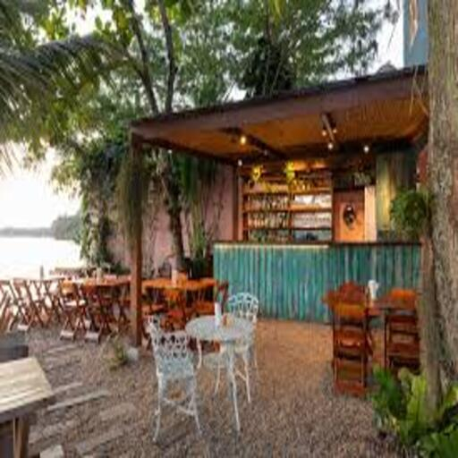
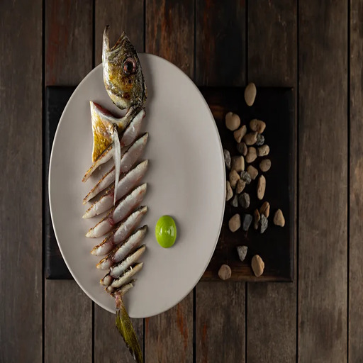
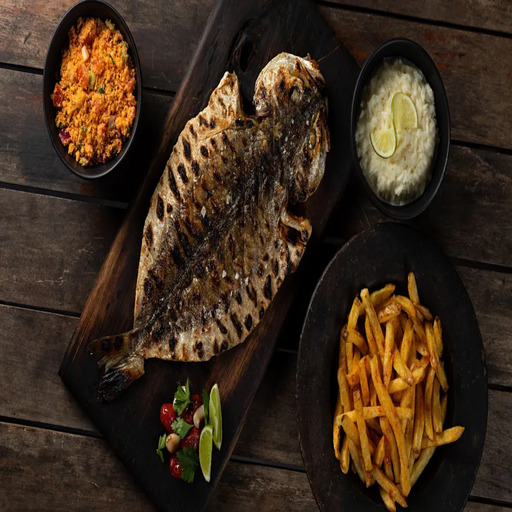
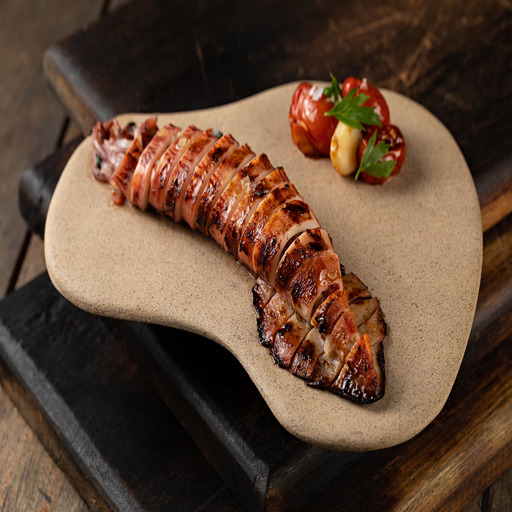
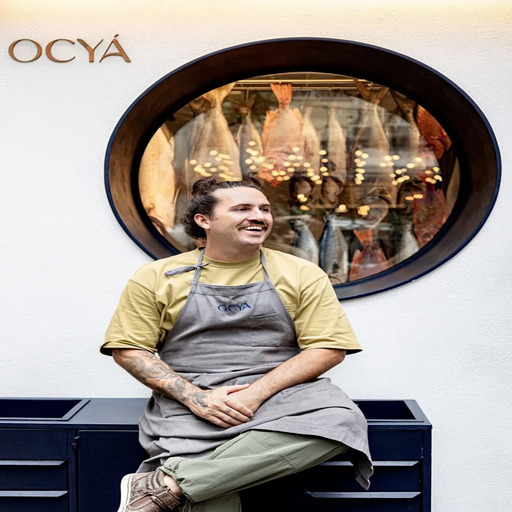
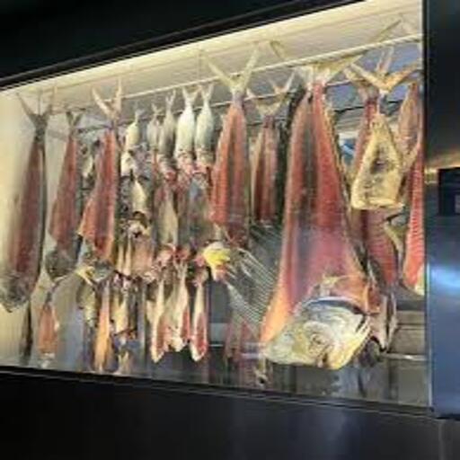
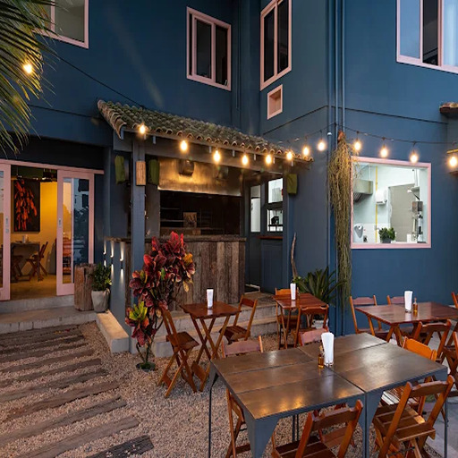

Ocyá
Alta gastronomia e prestígio internacional no coração da lagoa.

📸 Conheça o Espaço








O Ocyá é um renomado restaurante de frutos do mar no Rio de Janeiro e um dos maiores destaques gastronômicos da Ilha da Gigóia. Reconhecido pelo exigente Guia Michelin e listado entre os melhores da América Latina, atrai visitantes que buscam uma experiência culinária diferenciada.
Sob o comando do chef Gerônimo Athiê, o restaurante se destaca pelo cuidado extremo no preparo e por técnicas ancestrais que elevam o sabor dos pescados.
🔥 Técnicas & Diferenciais
- Maturação de Peixes: Técnica milenar que intensifica aromas e texturas, criando pratos com identidade única.
- Preparos na Brasa: O uso do fogo traz uma profundidade de sabor surpreendente e uma abordagem moderna e rústica à culinária do mar.
Com foco total em ingredientes frescos e pesca sustentável, o Ocyá consolidou-se como um dos restaurantes mais respeitados da cidade, oferecendo sofisticação no coração da Ilha.